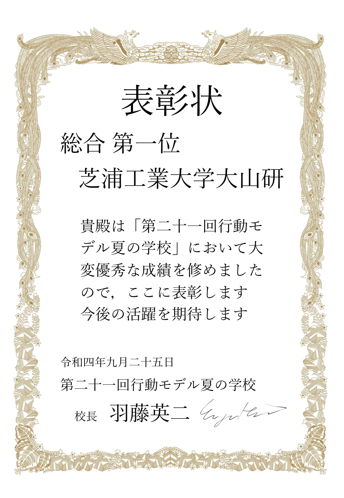
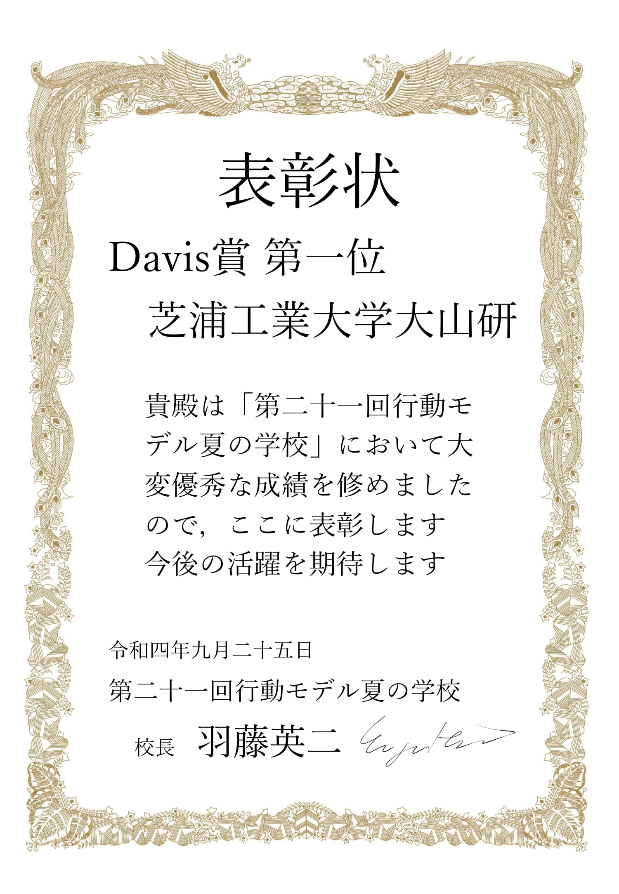

News | ニュース
9/23-25 行動モデル夏の学校＠東大
学部生，諸学者向けのpythonやRの行動モデリングのコーディングチュートリアルや若手研究者による，
機械学習と行動モデルの講義を受けることができる夏の学校に今年も参加してきました．
数理的政策分析演習では「街路景観に基づいた歩行者経路選択モデルの検証」をテーマにシナリオ分析を行いました．
時間的な余裕がない中，提出期限ぎりぎりまで粘って提出した発表資料でしたがそのかいもあって結果はなんと，
Davis賞と総合優勝をいただくことができました．
